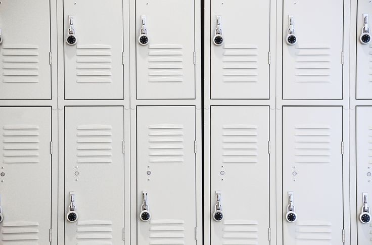
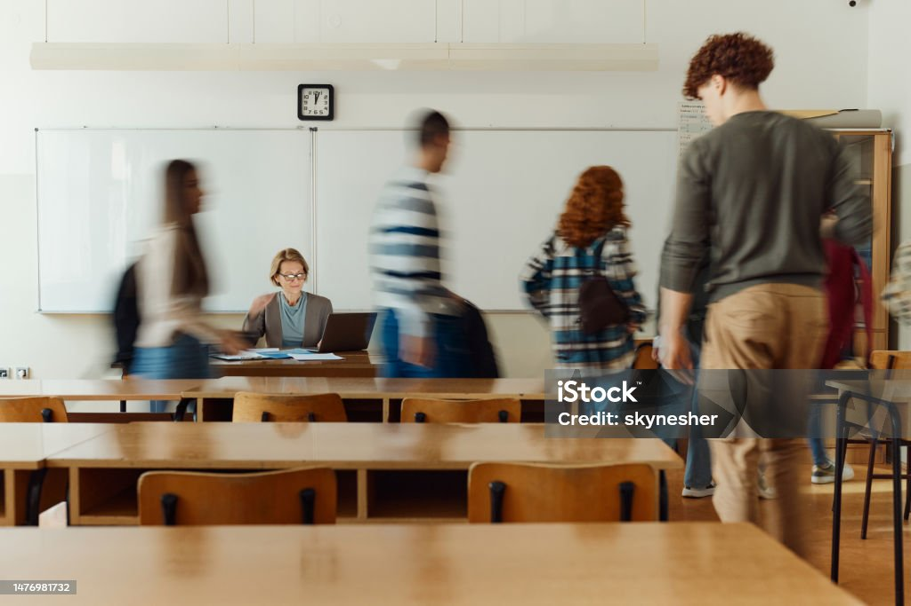

1. Students are allowed to experience what having a locker feels like. However this is optional and come with responsibilities such as ;
If your key is lost or broken, you will not receive your cash back.
Duplicating the key means students will pay the cost.

1. Students are only allowed to leave the class during lessons to ;
2. Students must use a hall pass in order to leave properly and respectfuly.
3. Any other reasons than the list are prohibited, or may have consequences.
4. Not using the pass or form is treated as leaving class without permission.
1. Students have the right to take a make-up test with fullscore if they are absent due to:
2. For points (a) and (b), students must submit a permission letter to their homeroom teacher no later than 3 days after returning to school.
3. Students may request to take a make-up test if they are participating in an exam or competition on a personal basis, by submitting an official participation letter no later than 1 week in advance.
4. Requests to take a make-up test due to other reasons are subject are only allowed to earn the maximum score will be the passing grade (KKM) if the request does not meet the conditions stated in points one and two, and is not considered an urgent matter.

1.Students are allowed to bring mobile phones to school;however,they are not permitted to turn them on or use them during school hours, except with the subject teachers approval to support the learning topic.
2.Students are required to turn off and submit their mobile phonesto their respective homeroom teachers before starting the morning devotion.
3.Students mustsubmit their mobile phones to their Homeroom (HR) teacher's designated box during devotion.